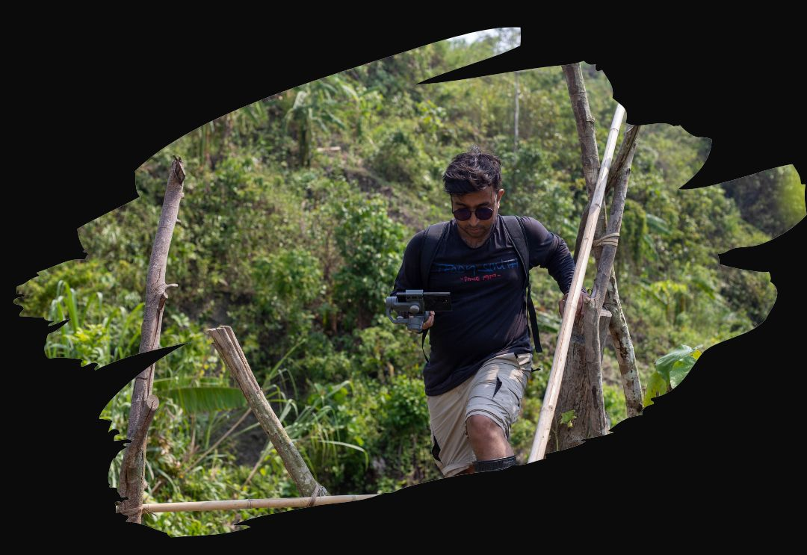
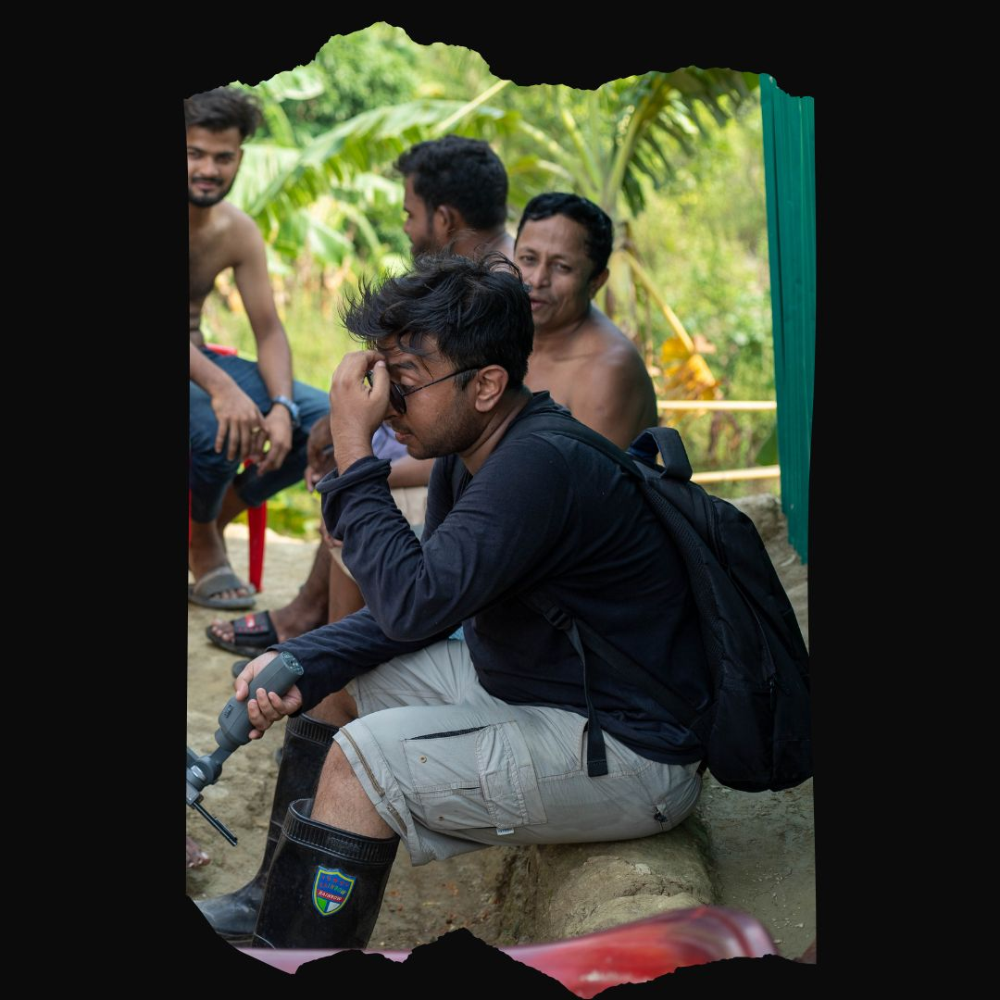

How a story is told on this site
A reference for the long-form reading layout: the standfirst sits here, a single sentence or two that sets up the story.

The first paragraph opens with a drop cap. Body text is set in a serif at a comfortable reading size, with a line length held to roughly 65–75 characters so the eye can travel easily from one line to the next on any screen.
Paragraphs are separated by generous space rather than indents. Links look like this, and emphasis stays restrained so the words of the people in the story carry the weight.
Section headings guide the reader
Use a heading every few paragraphs to break up long reads. Headings are set in the display face to echo the rest of the site.
Pull quotes give a voice room to breathe — keep them short and let them stand alone.
After a quote, return to the narrative. Lists are useful for practical details:
- Who the story is about, and how consent was given.
- Where and when it was recorded.
- The organisation or campaign it supports.

Embedding a film
Films open in the site’s 16:9 video player. Add a button anywhere in the story:
Close with what happens next — and how readers can support the work.